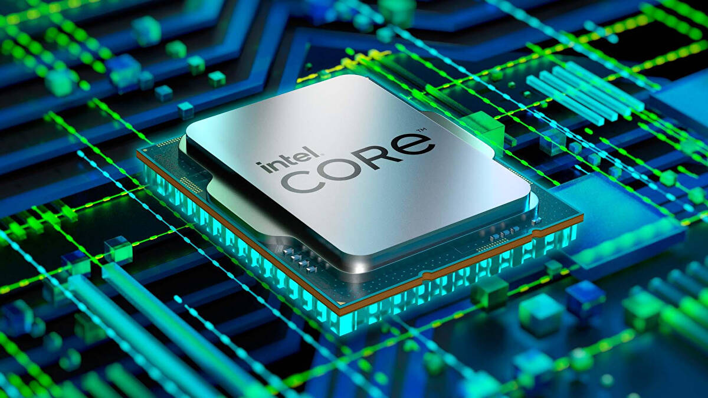

De CPU/Processor

CPU staat voor central processing unit en is de kern van iedere computer. Iedere CPU bestaat uit 2 onderdelen, het besturingsonderdeel en het rekenonderdeel. Als je heel erg inzoomt op een processor kan je miljarden transistoren zien. Deze transistoren kunnen aan en uit gezet worden om logische schakelingen te maken.
De meeste moderne CPU's hebben meerdere kernen. Een kern kan 1 taak tegelijk uitvoeren, dus door meerdere kernen op een CPU te plaatsen kan hij multitasken.

Hoe snel de processor de taken uitvoert is afhankelijk van de verwerkingssnelheid. De verkwerkinssnelheid geeft aan hoeveel instructies de CPU per seconde kan verkwerken. Om alle verwerkingsstappen gelijk te laten lopen worden er per seconde een vast aantal pulsen naar de CPU gestuurd. Hoeveel pulsen er per seconden worden verstuurd heet de kloksnelheid.
Naast het RAM geheugen heeft een CPU ook toegang tot een heel klein beetje geheugen op de CPU zelf, het cache geheugen. Hierin worden de meest gebruikte instructies opgeslagen, omdat het cache geheugen nog sneller is dan het RAM geheugen.